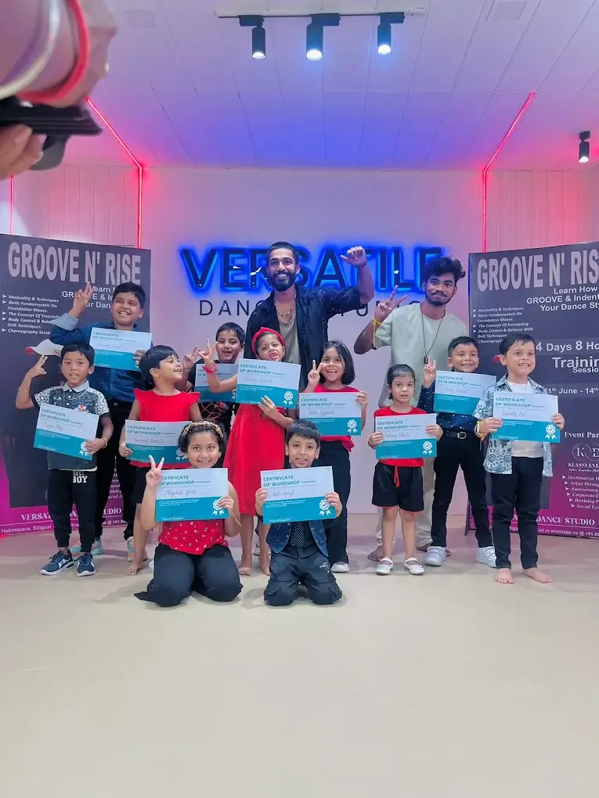
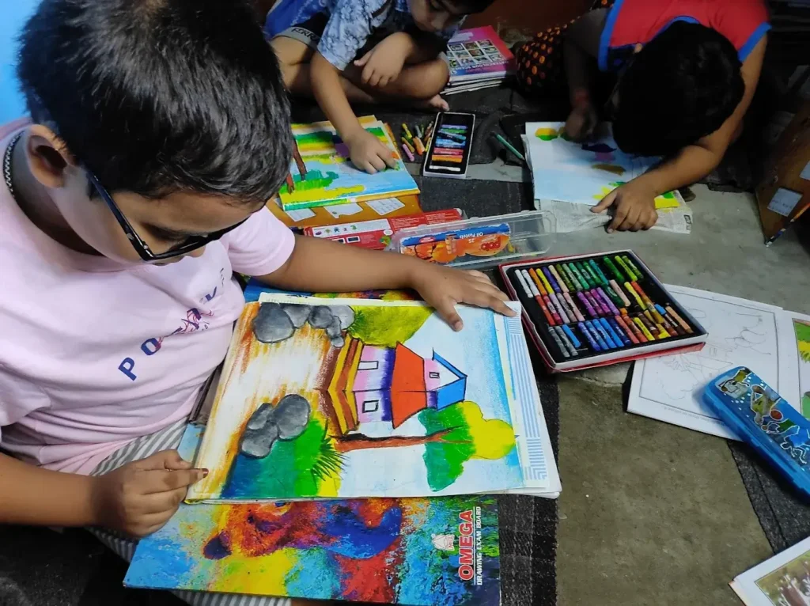
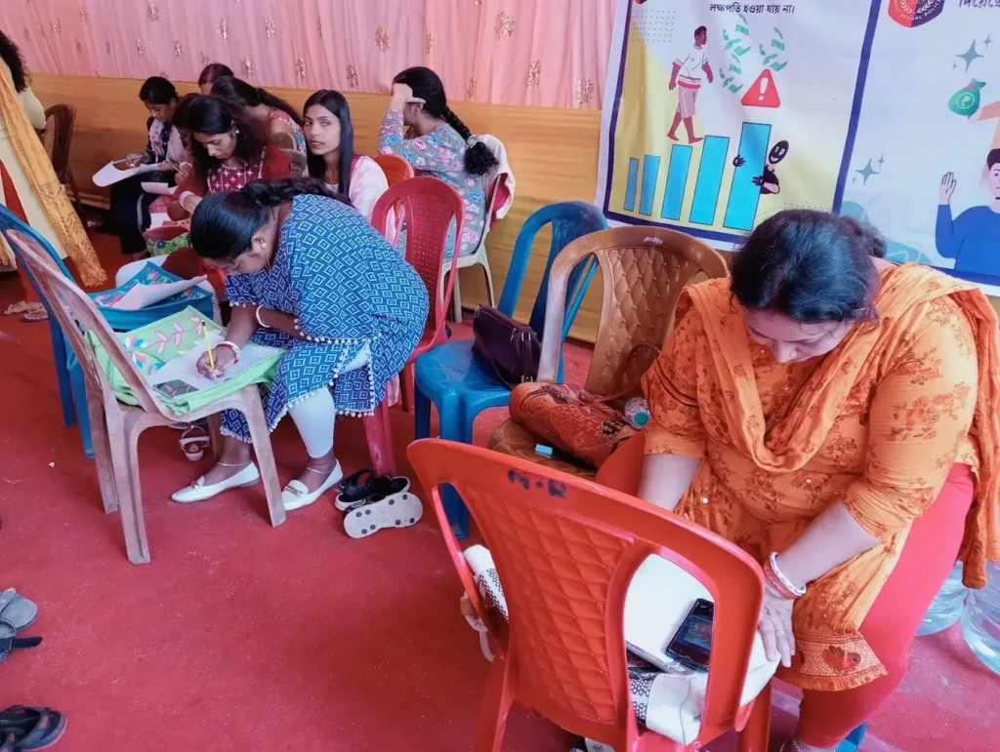
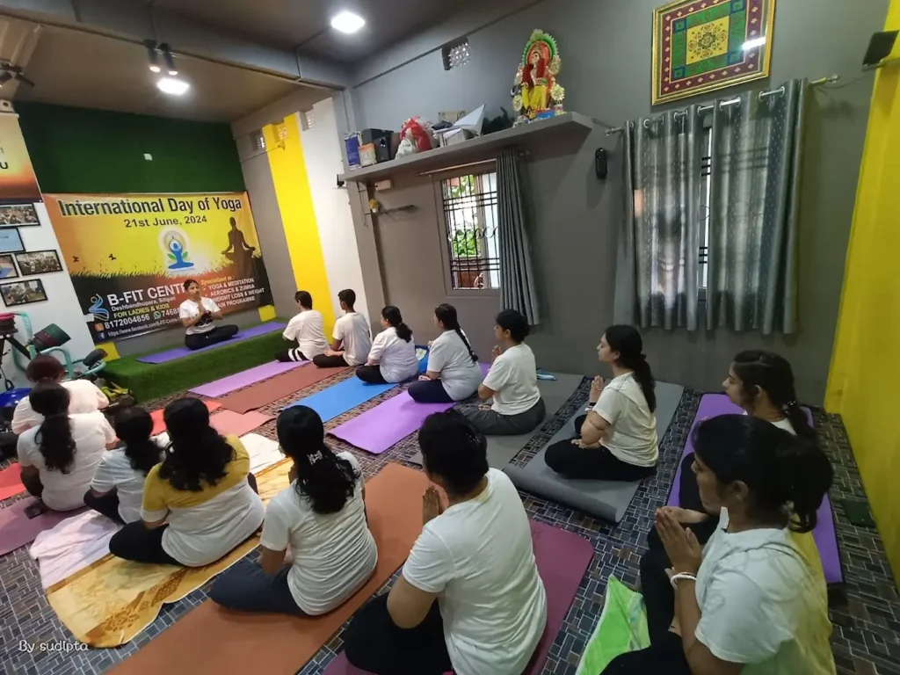
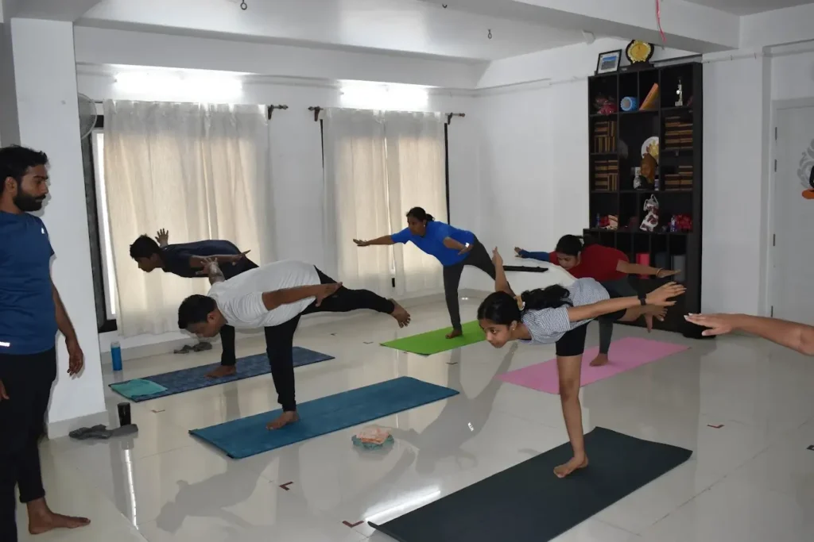
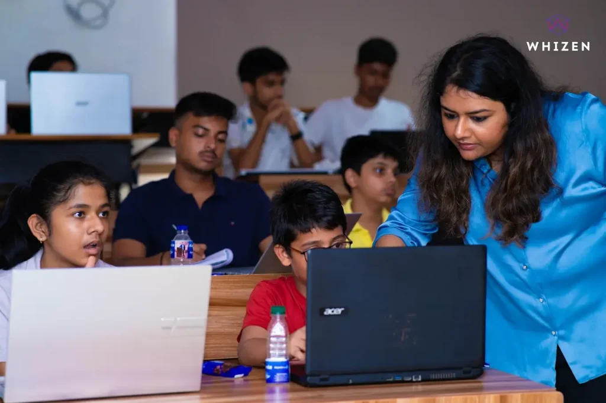
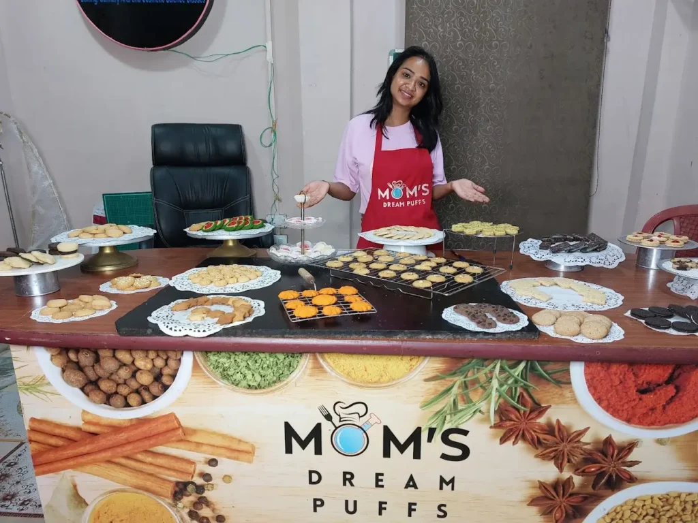
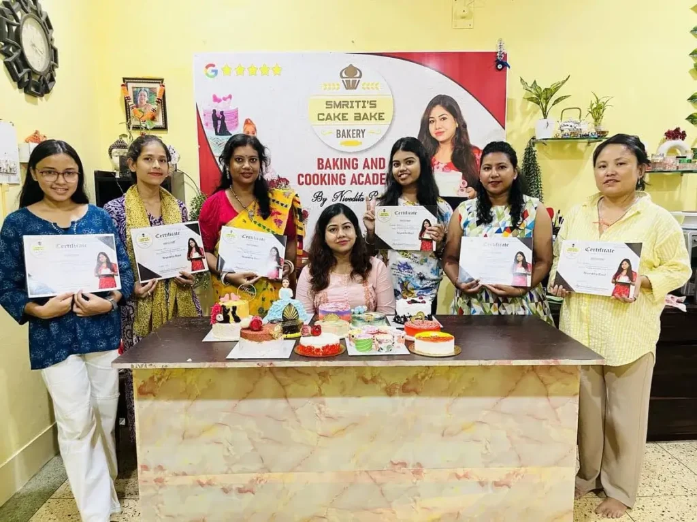
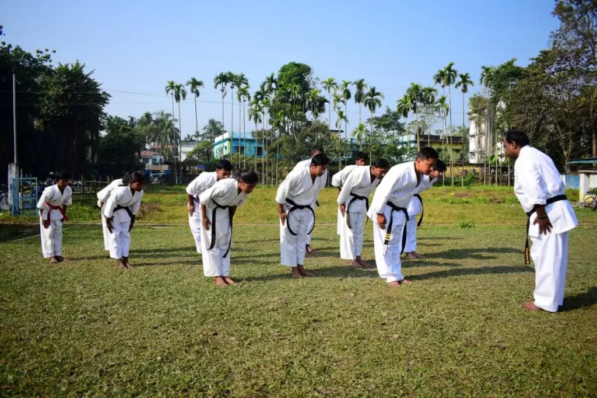
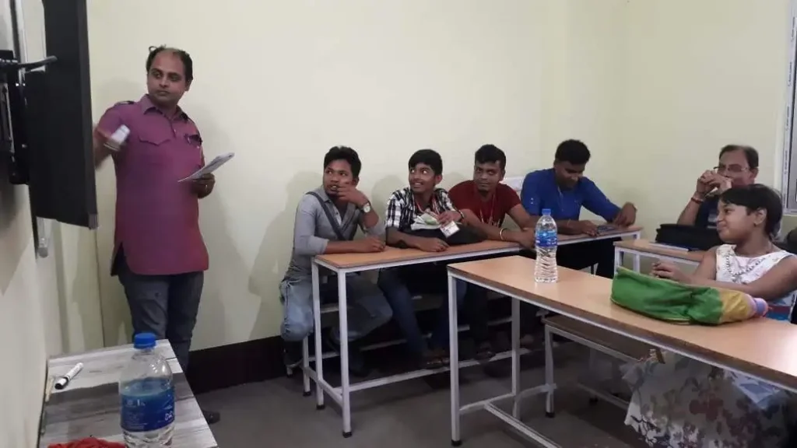

In between work, studies, and everyday responsibilities, we often forget to take out time for ourselves. That little “me-time” can do wonders, and what better way to spend it than learning something you actually enjoy?
In Siliguri, hobby classes are slowly becoming a popular choice for people irrespective of age. Whether you’re looking to unwind after a long day, want your child to explore something creative, or just feel like trying something new, there are plenty of options available.
If you’ve been wanting to try something different for yourself or for your child, here are some popular types of hobby classes you can find in Siliguri.
Music Classes
Music has a way of connecting us to ourselves. In Siliguri, you’ll find music classes for instruments like guitar, keyboard, drums,harmonium, and more. There are also vocal training options, whether you prefer Indian classical, semi-classical, or Western singing. Most classes welcome beginners and kids, but there are advanced levels too if you want to take it more seriously.
Places to learn music in Siliguri:
- Rock land Music & Art school – Rabindra Sarani
- Muse Of Harmony – Gurung Basti
- Swartarang Music Academy & Audio Production – Deshbandhupara
- The Sunday Guitar School – Haider Para
- Sahana Sanskritik Kendra – Baghajatin Road
Dance Classes
Be it Bollywood to calm classical dance forms like Rabindra Nritya classes, a wide range of dance classes are available in Siliguri. You’ll find studios that teach freestyle, hip-hop, contemporary, and even classical dance forms. Some even offer weekend or women-only batches. Joining a dance class is actually a great way to stay active and enjoy.
Places to learn dance in Siliguri:
- Dynamic Dance Academy – Ashram Para
- Versatile Dance Studio – Hakimpara
- Alive Devil Dance Academy – Haiderpara
- Nritya Malancha – Hakimpara
- Shailishree Nrityangan – Kadamtala
- Dancing Diva Studio (Women-Only) – Milanpally

Art & Craft Classes
If you are interested in trying painting, sketching, or DIY crafts, there are classes for that too here. Many art classes in Siliguri are designed for both kids and adults. You can try watercolor painting, acrylic painting, pencil shading, resin art, or even traditional Indian art styles like Mandala art. Art and craft are not only creative but also a very relaxing hobby.
Places to learn art & craft in Siliguri:
- Ram Kinkar Fine Arts Academy – Haiderpara
- Siliguri Monalisa Art Institute – Bhanunagar
- Dream Art Studio Resin Art – Milanpally
- Siliguri Newlife Art Academy (Only for Kids)- Haiderpara


Fitness, Yoga & Dance Workouts
Not everyone enjoys the gym and that is completely fine as there are many fitness classes in Siliguri that include yoga, pilates, and zumba. So, if you are looking to spend time doing an activity that helps you stay fit and reduce stress, then you must definitely try this out.
Places to take yoga and dance workout class in Siliguri:
- Shakshi Yoga – Punjabi Para
- Smile Yoga Studio – Punjabi Para & Don Bosco Colony
- Gold’s Gym – Sevoke Road
- Ultimate Fitness Studio – Nazrul Sarani
- B-Fit Centre – Deshubandhu Para


Coding & Digital Skills
If you’re someone who enjoys working on a laptop or loves solving problems, coding might be a great hobby to explore. Several classes in Siliguri offer courses on basic coding, website design, app creation, video editing,graphic design and even digital art.. These skills are fun to learn and can also be useful in the long run as it also open doors to new career opportunities.
Places to learn coding and other digital skills in Siliguri:
- Braand School – Hakimpara
- Whizen Academy – Bankim Nagar
- Vision Computer Academy – Pradhan Nagar
- Moople – Institute of Animation and Design – Baghajatin Road
- Arena Animation – College Para
- MAAC – Hill Cart Road


Baking Classes
If you like cooking, then baking classes are worth trying. In Siliguri, there are many classes where you can learn to bake cakes, cookies, and even chocolates. Most classes are of short duration and great for beginners. These classes are a fun way to spend time, improve your baking skills or even take the first step toward starting a small home business in the future.
Places to learn baking in Siliguri:
- Smriti’s Cake Bake – Hakimpara
- Mom’s Dream Puffs – Hakimpara
- Celebaketion By Pritisha – Baghajatin Colony


Sports & Outdoor Activities
For those who love staying active or enjoy playing indoor games, sports can be a great hobby to pick up. In Siliguri, you’ll find coaching classes for cricket, football, badminton, table tennis, swimming and even martial arts like karate. Many of these classes are open to both kids and adults. Joining sports classes, whether indoor or outdoor, not only keeps you fit but also helps improve focus, teamwork, and confidence. Plus, it’s a fun way to break away from screens and daily stress.
Places to join sports classes in Siliguri:
- Amtala Club- Ashram Para
- Sajal Chess Academy- Hakimpara
- Siliguri Martial Arts Association- Bidyachakra Colony
- Agragami Sangha Cricket Academy- Hakimpara
- Endeavour Global Sports- Champasari
- Siliguri Club- Eastern Bypass

Foreign Language Classes
Learning a new language is also an exciting yet productive hobby. In Siliguri, you can find few classes for languages like French, German, Spanish, Japanese, and even Korean. These are good for students who want to study or settle abroad, or anyone who just enjoys learning new things about different cultures.
Places to learn foreign language in Siliguri:
- Indian School of Languages and Literature Studies – College Para
- You can also find individual teachers for foreign languages on platforms like UrbanPro.

Why Should You Join a Hobby Class?
- It gives you a break from your regular routine
- You learn something new or polish an old skill
- It helps reduce stress and improve focus
- You meet new people who share your interests
Picking up a new hobby isn’t just about learning a skill, it’s about taking time from yourself from your regular schedule to do something new for yourself. It gives you a break from the usual routine, helps you grow, and adds a little more joy to your day.
Siliguri has so many hobby classes now, and most of them are easy to join, even if you’re a complete beginner. You don’t need to be great at it, you just need to start. It’s one of the many simple ways to enjoy your time in the city, especially if you’re already exploring other local experiences and things to do in Siliguri.
So if there’s something you’ve been thinking about trying, just go for it as you never know, it might, actually, become the best part of your day.

July 8, 2025
Best Tour & Travel Planners in Siliguri

July 8, 2025